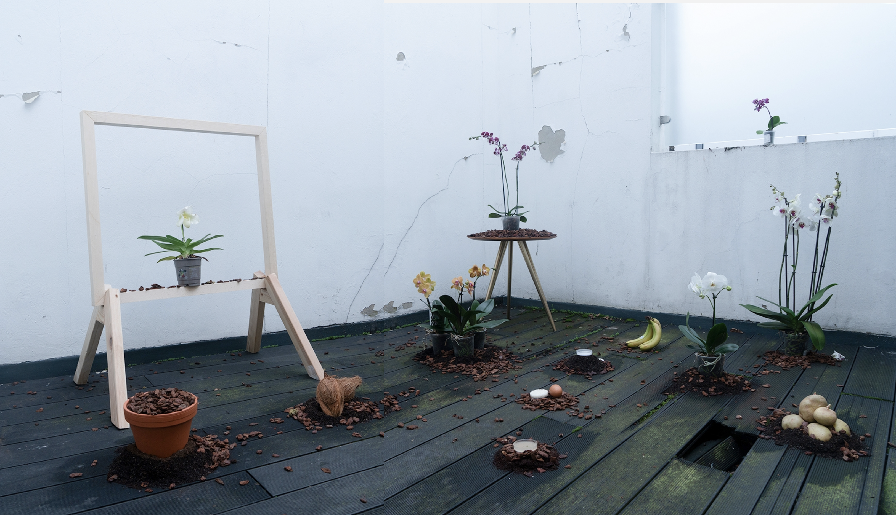

Phalaenopsis and their Friends whisper their tales
兰花和它的朋友们悄悄地诉说着它们的秘密
Phalaenopsis and their friends whisper their tales is an interactive narrative work composed of a scene of orchids and a materialized system of deep listening. It shows the bio-political of orchids as a modern commodity intertwined by the intervention of human biotechnology and the interaction of other species.
"The potted orchids that are placed in modern living rooms tend to be perceived as creating a natural ambiance to an artificial environment. Despite this tendency in the senses, a look at the production process of potted orchids reveals that their lives are extensively involved in human technology and commodity production. Taking the production system in the Netherlands, the country with the largest share of sales in Europe, as an example (Bloemenbureau Holland 2016), the potted phalaenopsis goes from tissue culture in the laboratory, then developing into young plants handed over to the production company, to final transport to the market for sale (Chen 2020), exemplifying how the orchids are reproduced, managed, and sustained by artificial environments. Based on these factual realities, I intend to develop a narrative in which human technology, cross-species, and orchids are intertwined, with potted orchids as the central point. This framework is inspired by the zoe/geo/tech assemble proposed by Braidotti (Braidotti 2019). As a material analysis framework for posthuman subjects, the scope of its theoretical framework overlaps with the artificial environment of orchids in most places. I have also incorporated Lynn's cultural analysis of Victorian Britain and orchids—the massive plundering of the tropics by Britain in the 19th century is seen as the epitome of imperialism, but the cultivation and contemplation of orchids by British gardeners goes some way to mitigating the imperialist impulse (Lynn 2017). But it was also the gardener's research into orchids that opened up the possibility of creating artificial environments for orchids. I therefore take the Victorian 'Orchidelirium' as the starting point for tales."
